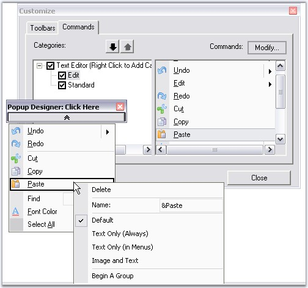
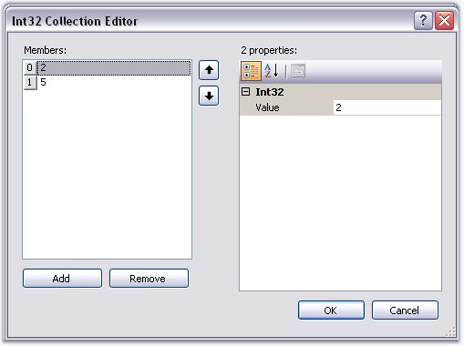
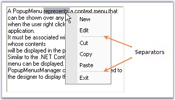

This topic will guide on how to group the menu items by inserting separator(s), in a popup menu with and without BarManager.
If the ParentBarItem associated with the popup menu is contained within a BarManager, drop-down the popup menu from the Popup Form, right click on an item and select Begin A Group from the context menu.

Figure 818: Adding Separator for a PopupMenu or Grouping item contained within a BarManager
If the ParentBarItem is not contained within a BarManager, edit the SeparatorIndices property of the ParentBarItem indicating the item indices in the items list where you want the separators to be introduced.

Figure 819: Adding Separators through the SeparatorIndices Collection Editor when BarManager is Not Used

Figure 820: Separators after BarItem2 and BarItem5
We can also group the items using BeginGroupAt and RemoveGroupAt methods. Click here to know more.
See Also
· Associating Popup Menu To a Control
· Adding and filling a popup menu
· How to programmatically begin a group or remove an existing group in a popup menu